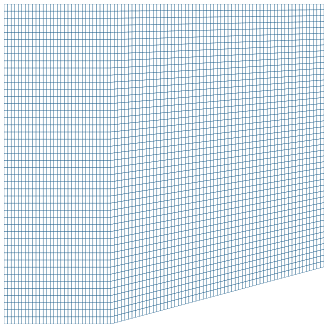
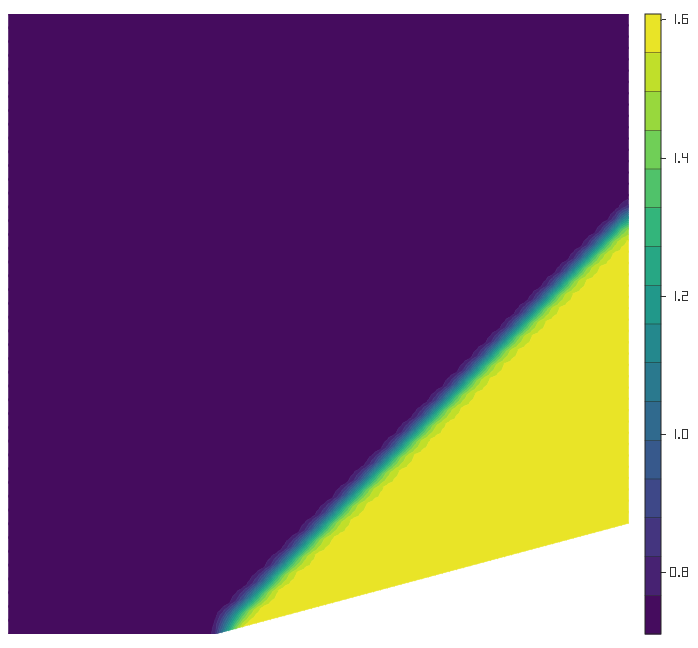

Keil 15°, Mach 2
Schräger Stoß an einer Rampe in reibungsfreier Überschallströmung. Hinter dem Stoß sind Druck und Machzahl aus den Stoßbeziehungen bekannt.
Steckbrief
| Angabe | Wert |
|---|---|
| Machzahl der Zuströmung | 2,000 |
| Reynoldszahl | – (reibungsfrei) |
| Modell | Euler-Gleichungen (reibungsfrei) |
| Netz | 4.050 Zellen |
| Zeitverfahren | Newton-Krylov (implizit) |
| Ergebnis der Rechnung | konvergiert nach 28 Schritten, relatives Residuum 3,7·10−10 |
| Stoßwinkel nach der Theorie | 45,34 ° |
Was der Fall zeigt
Zweck
Der Fall prüft, ob der Löser einen schrägen Verdichtungsstoß erfasst und ihn mit der richtigen Lage und Stärke wiedergibt. Die Zuströmung (Mach 2,000) trifft am Einlass ein, die untere Wand knickt an der Rampenecke um 15° nach oben, Auslass und oberer Rand extrapolieren. Geprüft werden damit die Stoßerfassung des Flussverfahrens und die Wandbedingung der reibungsfreien Wand an der geneigten Fläche.
Theorie des Bezugs
Die Wand lenkt die Strömung um den Keilwinkel um. Der schwache schräge Stoß mit dem Stoßwinkel (kleinste Lösung oberhalb des Machwinkels) folgt aus der ---Beziehung
(1)Mit der Normalkomponente liefern die Stoßbeziehungen den Zustand dahinter:
Gleichung (1) wird nach aufgelöst (Bisektion); übersteigt den Grenzwinkel, gibt es keinen anliegenden Stoß. Für , und ergibt das , , und .
Was man im Bild sehen soll
In der Ergebnisansicht liegt vor dem Stoß eine einheitliche Farbfläche (die Zuströmung). Der Stoß erscheint als schmales Farbband, das an der Rampenecke beginnt und unter etwa gegen die Anströmrichtung ansteigt; dahinter ist die Fläche wieder einheitlich, mit dem höheren Druck. Im Diagramm liegt der Wanddruck vor der Ecke bei 1 und springt hinter ihr auf das Plateau (Punkte); die Linie der Rechnung folgt dieser Stufe bis auf die Verschmierung an der Ecke. Die Tabelle vergleicht das Plateau der Rechnung mit der Theorie: gerechnet 2,195 gegen 2,195, Machzahl hinter dem Stoß 1,444 gegen 1,446.
Grenzen des Vergleichs
- Der Stoß ist im Verfahren keine Unstetigkeit, sondern über einige Zellen verschmiert. Deshalb steht in der Tabelle der Median über die Zellen im Plateau, und das Diagramm vergleicht mit einer Stufe, ohne daraus eine RMS-Abweichung zu bilden: sie würde nur die Verschmierung an der Ecke messen.
- Die Theorie gilt für einen unendlich langen Keil und den schwachen Ast. Das Gebiet endet am Auslass und am oberen Rand, wo extrapoliert wird.
- Die Strömung ist reibungsfrei: es gibt keine Grenzschicht an der Rampe und keine Wechselwirkung des Stoßes mit ihr.
Netz

Ergebnisansicht

Validierung
Der Bezug sind die Stoßbeziehungen des schrägen Stoßes (analytisch, R84). Das Diagramm zeigt den Wanddruck p/p∞ an der Rampe: vor der Ecke der Druck der Zuströmung, hinter der Ecke das Plateau p₂/p₁ der Theorie (Punkte; die Zellen um die Ecke sind ausgenommen). Die Tabelle vergleicht den Median über die Zellen hinter dem Stoß, also über das Plateau, mit Druckverhältnis und Machzahl der Stoßbeziehungen.
Kennzahlen
| Kennzahl | gerechnet | Referenz | Abweichung |
|---|---|---|---|
| Druckverhältnis p₂/p₁ hinter dem Stoß | 2,195 | 2,195 | +0,04 % |
| Machzahl hinter dem Stoß | 1,444 | 1,446 | −0,09 % |
| größter Wert: Machzahl | 2,003 | 2,000 | +0,15 % |
Quellen
R84.